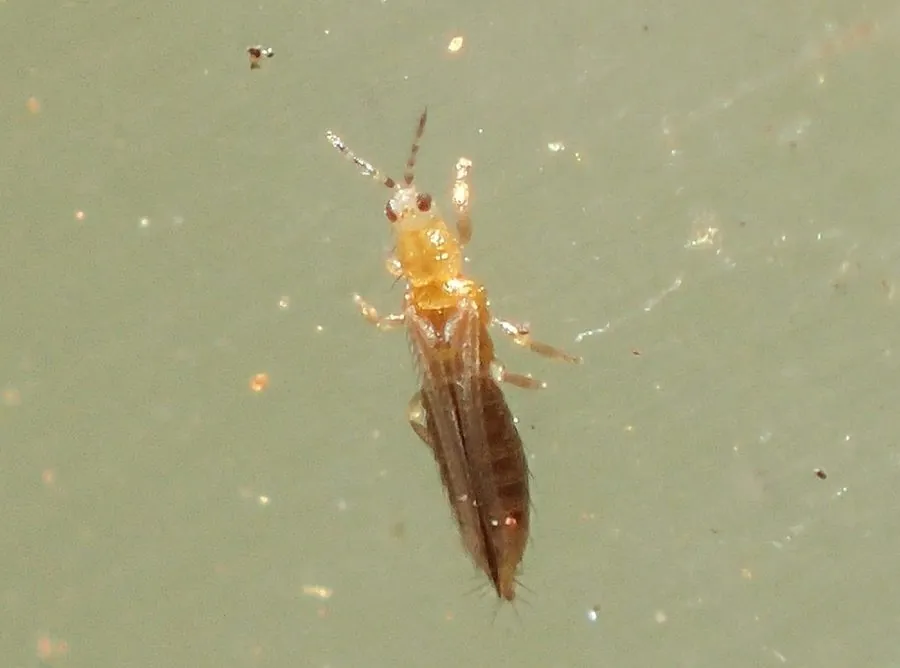

昆虫 · 动物界
西花蓟马 Frankliniella occidentalis

世界性的农业害虫，体长仅 1–2 毫米、翅缘长有缨毛，锉吸花器和叶片汁液，还能传播番茄斑萎病毒。
- 分类
- 门节肢动物门纲昆虫纲目缨翅目科蓟马科属花蓟马属
- 栖息环境
- 花卉、蔬菜和果树的叶片与花器内，温室中尤其常见
- 地理分布
- 原产北美洲西部，现扩散至全球温带和亚热带地区
- 保护级别
- 暂无评估
物种志
西花蓟马成虫体长 1.0–1.7 mm，体形细长。它的体色为浅黄至褐色，翅狭长、边缘生有长缨毛，因此得名“缨翅目”；复眼发达，口器为锉吸式，触角短；若虫体色浅，行动活泼。
西花蓟马原产于北美洲西部，如今已扩散到全球温带和亚热带地区，寄主包括蔬菜、花卉、果树等数百种植物。它以锉吸式口器刮破植物表皮后吸食汁液，造成叶片银白色斑点、花器畸形，严重影响观赏花卉和蔬菜的品质；还能传播番茄斑萎病毒等植物病毒。西花蓟马繁殖快，一年可发生多代，常在花内隐蔽活动，抗药性强，防治难度大。防治上需结合色板监测、防虫网、天敌释放和合理用药，是花卉和蔬菜生产中的重要害虫。
形态与习性
- 食性锉吸植物花器和叶片汁液
- 体长成虫 1.0–1.7 mm
- 翅狭长，边缘生有长缨毛
- 危害造成叶片银白斑点、花器畸形，并传播植物病毒
- 繁殖一年可发生多代，繁殖快
- 防治色板监测、防虫网、天敌释放与合理用药结合
趣味知识
- 西花蓟马体长只有 1–2 毫米，常藏在花朵内部。
- 它的翅缘生有长缨毛，因此被归入缨翅目。
- 西花蓟马能传播番茄斑萎病毒，危害多种作物。
- 它繁殖快、抗药性强，是温室花卉的重要害虫。